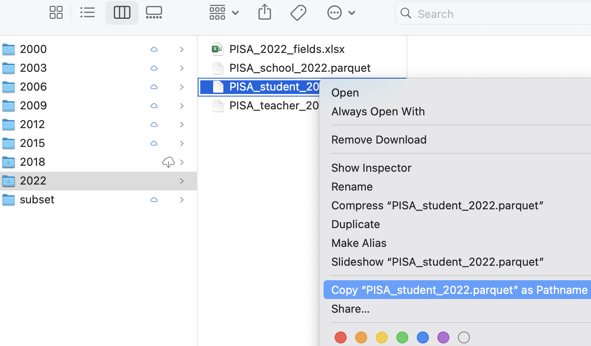

# A tibble: 5 × 4
CNT PV1MATH ESCS IC172Q01JA
<chr> <dbl> <dbl> <fct>
1 Albania 180. 1.11 Agree
2 Albania 308. -3.05 Strongly disagree
3 Albania 268. -0.187 <NA>
4 Albania 273. -3.22 Disagree
5 Albania 435. -1.05 Agree Loading packages and exploring data
This course focuses on using the tidyverse; a free collection of programming packages that will allow you to write code that imports data, tidys it, transforms it into useful datasets, visualises findings, creates statistical models and communicates findings to others data using a standardised set of commands.

For many people the tidyverse is the main reason that they use R. The tidyverse is used widely in government, academia, NGOs and industry, notable examples include the Financial Times and the BBC. Code in the tidyverse can be (relatively) easily understood by others and you, when you come back to a project after several months.
Note
Try this out
The code above transforms data and converts it into a graph. It doesn’t have any comments, but you should hopefully be able to understand what a lot of the code does by just reading it. Can you guess what each line does? Try running the code by selecting parts of it and pressing control | command ⌘ and Enter
1 Loading data
We can’t do much with R without loading data from elsewhere. Data will come in many formats and R should be able to deal with all of them. Some of the datasets you access will be a few rows and columns; others, like the ones we are going to use on this course, might run into hundreds of thousands or even millions of rows and hundreds or thousands of columns. Depending on the format you are using, you might need to use specific packages. A few of the data file types you might meet are described below:
| File type | Description |
|---|---|
| Comma separated values [.csv] | As it says in the name, .csv files store data by separating data items with commas. They are a common way of transferring data and can be easily created and read by Excel, Google spreadsheets and text editors (in addition to R). CSVs aren’t compressed so will generally be larger than other file types. They don’t store information on the types of data stored in the file so you might find yourself having to specify that a date column is a date, rather than a string of text. You can read and write csv files without the need to load any packages, but if you do use readr you might find things go much faster. |
| Excel [.xls | .xlsx | .xlsxm] | Excel files store data in a compressed custom format. This means files will generally be smaller than CSVs and will also contain information on the types of data stored in different columns. R can read and write these files using the openxlsx package, but you can also use the tidyverse’s readxl for reading, and writexl for writing for excel formats. |
| R Data [.rds] | R has it’s own data format, .rds. Saving to this format means that you will make perfect copies of your R data, including data types and factors. When you load .rds files they will look exactly the same as when you saved them. Data can be highly compressed and it’s one of the fastest formats for getting data into R. You can read and write .rds files without the need to load any packages, but using the functions in readr might speed things up a bit. You won’t be able to look at .rds files in other programs such as Excel |
| Arrow [.parquet] | Apache Arrow .parquet is a relatively new format that allows for the transfer of files between different systems. Files are small and incredibly fast to load, whilst looking exactly the same as when you save them. The PISA dataset used here, that takes ~20 seconds to load in .rds format, will load in less than 2 seconds in .parquet format. Because of the way that data is stored you won’t be able to open these files in programs such as Excel. You will need the arrow package to read and write .parquet files. |
| SPSS [.sav] | SPSS is a common analysis tool in the world of social science. The native format for SPSS data is .sav. These files are compressed and include information on column labels and column datatypes. You will need either the haven or foreign packages to read data into R. Once you have loaded the .sav you will probably want to convert the data into a format that is more suitable for R, normally this will involve converting columns into factors. We cover factors in more detail below. |
| Stata [.dta] |
haven or foreign packages to read data into R |
| SAS [.sas] |
haven or foreign packages to read data into R |
| Structured Query Language [.sql] | a common format for data stored in large databases. Normally SQL code would be used to query these, you can use the tidyverse to help construct SQL this through the package dbplyr which will convert your tidyverse pipe code into SQL. R can be set up to communicate directly with databases using the DBI package. |
| JavaScript Object Notation [.json] |
.json is a popular format for sharing data on the web. You can use jsonlite and rjson to access this type of data |
For this course we will be looking at .csv, excel, .rds and parquet files.
2 Dataframes
Loading datasets into R will normally store them as dataframes (also known as tibbles when using the tidyverse). Dataframes are the equivalent of tables in a spreadsheet, with rows, columns and datatypes.
The table above has 4 columns, each column has a datatype, CNT is a character vector, PV1MATH is a double (numeric) vector, ESCS is a double (numeric) vector and IC172Q01JA is a factor. For more about datatypes, see ?@sec-datatypes
Dataframes are made from a collection of vectors, each column can be treated as if it was a vector, for example you can add one column to another:
# A tibble: 613,744 × 5
CNT PV1MATH PV1SCIE PV1READ overall_grade
<fct> <dbl> <dbl> <dbl> <dbl>
1 Albania 180. 335. 248. 763.
2 Albania 308. 315. 258. 882.
3 Albania 268. 359. 285. 911.
4 Albania 273. 215. 322. 809.
5 Albania 435. 435. 464. 1335.
6 Albania 534. 479. 451. 1464.
7 Albania 382. 342. 391. 1115.
8 Albania 273. 323. 308. 904.
9 Albania 355. 361. 429. 1145.
10 Albania 430. 386. 420. 1235.
11 Albania 425. 346. 381. 1152.
12 Albania 463. 414. 394. 1271.
13 Albania 236. 288. 247. 771.
14 Albania 327. 327. 286. 939.
15 Albania 476. 446. 466. 1388.
16 Albania 303. 340. 334. 977.
17 Albania 326. 394. 342. 1061.
18 Albania 549. 569. 496. 1614.
19 Albania 428. 386. 399. 1214.
20 Albania 455. 369. 325. 1149.
21 Albania 428. 468. 485. 1382.
22 Albania 278. 358. 315. 950.
23 Albania 395. 386. 481. 1262.
24 Albania 394. 357. 305. 1056.
25 Albania 467. 446. 367. 1280.
26 Albania 328. 298. 342. 968.
27 Albania 334. 412. 313. 1060.
28 Albania 270. 348. 389. 1007.
29 Albania 383. 393. 360. 1137.
30 Albania 403. 421. 474. 1297.
31 Albania 301. 254. 320. 874.
32 Albania 329. 325. 335. 989.
33 Albania 487. 565. 458. 1510.
34 Albania 346. 289. 289. 925.
35 Albania 413. 481. 417. 1311.
36 Albania 338. 302. 336. 975.
37 Albania 325. 331. 326. 982.
38 Albania 263. 288. 259. 811.
39 Albania 487. 453. 449. 1388.
40 Albania 449. 468. 602. 1519.
41 Albania 298. 387. 355. 1040.
42 Albania 310. 302. 289. 901.
43 Albania 368. 415. 394. 1176.
44 Albania 314. 288. 284. 886.
45 Albania 174. 227. 234. 634.
46 Albania 390. 452. 372. 1214.
47 Albania 347. 236. 263. 846.
48 Albania 328. 297. 387. 1013.
49 Albania 366. 374. 361. 1101
50 Albania 428. 393. 346. 1167.
51 Albania 371. 335. 294. 1000.
52 Albania 291. 379. 271. 940.
53 Albania 458. 443. 488. 1390.
54 Albania 329. 287. 334. 950.
55 Albania 287. 345. 278. 910.
56 Albania 390. 409. 461. 1260.
57 Albania 370. 426. 381. 1177.
58 Albania 280. 321. 271. 871.
59 Albania 437. 347. 356. 1140.
60 Albania 438. 484. 487. 1409.
61 Albania 299. 362. 341. 1002.
62 Albania 309. 392. 377. 1078.
63 Albania 347. 395. 338. 1080.
64 Albania 303. 426. 406. 1134.
65 Albania 381. 328. 339. 1048.
66 Albania 445. 398. 424. 1268.
67 Albania 322. 315. 336. 973.
68 Albania 480. 540. 578. 1599.
69 Albania 369. 384. 453. 1206.
70 Albania 495. 510. 422. 1427.
71 Albania 368. 381. 297. 1046.
72 Albania 468. 435. 246. 1149.
73 Albania 278. 280. 323. 881.
74 Albania 473. 499. 428. 1399.
75 Albania 412. 413. 438. 1263.
76 Albania 277. 375. 305. 957.
77 Albania 412. 406. 299. 1118.
78 Albania 210. 247. 304. 761.
79 Albania 305. 335. 251. 891.
80 Albania 589. 492. 446. 1527.
81 Albania 411. 463. 365. 1239.
82 Albania 332. 324. 314. 970.
83 Albania 314. 264. 252. 829.
84 Albania 283. 288. 238. 809.
85 Albania 404. 308. 314. 1026.
86 Albania 304. 303. 319. 927.
87 Albania 205. 274. 235. 715.
88 Albania 348. 311. 343. 1002.
89 Albania 478. 401. 426. 1305.
90 Albania 285. 338. 353. 975.
91 Albania 415. 376. 345. 1135.
92 Albania 398. 330. 335. 1064.
93 Albania 293. 354. 365. 1012.
94 Albania 381. 358. 335. 1075.
95 Albania 318. 304. 351. 973.
96 Albania 388. 362. 328. 1078.
97 Albania 311. 355. 386. 1053.
98 Albania 364. 396. 309. 1070.
99 Albania 391. 376. 316. 1083.
100 Albania 353. 317. 270. 940.
101 Albania 321. 275. 333. 928.
102 Albania 422. 397. 426. 1244.
103 Albania 302. 347. 337. 986.
104 Albania 330. 338. 320. 988.
105 Albania 223. 229. 309. 761.
106 Albania 452. 320. 309. 1082.
107 Albania 433. 490. 441. 1364.
108 Albania 516. 422. 392. 1329.
109 Albania 363. 357. 334. 1054.
110 Albania 496. 542. 358. 1396.
111 Albania 258. 273. 97.5 628.
112 Albania 468. 541. 384. 1393.
113 Albania 296. 305. 324. 925.
114 Albania 463. 496. 474. 1433.
115 Albania 293. 260. 231. 784.
116 Albania 301. 318. 280. 899.
117 Albania 317. 327. 361. 1005.
118 Albania 207. 260. 252. 719.
119 Albania 270. 315. 184. 769.
120 Albania 374. 326. 416. 1116.
121 Albania 350. 402. 318. 1070.
122 Albania 255. 398. 336. 989.
123 Albania 236. 216. 306. 758.
124 Albania 338. 362. 221. 921.
125 Albania 304. 361. 320. 985.
126 Albania 322. 361. 398. 1081.
127 Albania 408. 423. 319. 1151.
128 Albania 329. 320. 372. 1021.
129 Albania 383. 372. 453. 1208.
130 Albania 267. 256. 253. 776.
131 Albania 460. 456. 426. 1342.
132 Albania 339. 345. 356. 1041.
133 Albania 493. 463. 515. 1471.
134 Albania 427. 408. 362. 1196.
135 Albania 440. 401. 439. 1281.
136 Albania 331. 337. 348. 1016.
137 Albania 275. 320. 312. 907.
138 Albania 397. 474. 383. 1253.
139 Albania 452. 430. 399. 1281.
140 Albania 572. 517. 364. 1452.
141 Albania 324. 317. 270. 911.
142 Albania 333. 364. 323. 1020.
143 Albania 610. 490. 401. 1501.
144 Albania 334. 316. 337. 988.
145 Albania 338. 307. 419. 1064.
146 Albania 335. 375. 247. 957.
147 Albania 254. 328. 365. 946.
148 Albania 256. 275. 277. 809.
149 Albania 284. 249. 243. 776.
150 Albania 275. 334. 293. 902.
151 Albania 272. 258. 300. 830.
152 Albania 450. 437. 439. 1327.
153 Albania 313. 312. 218. 844.
154 Albania 278. 297. 298. 873.
155 Albania 368. 426. 428. 1223.
156 Albania 404. 476. 456. 1336.
157 Albania 395. 339. 334. 1068.
158 Albania 446. 360. 354. 1160.
159 Albania 375. 394. 393. 1162.
160 Albania 362. 428. 350. 1140.
161 Albania 453. 424. 457. 1334.
162 Albania 247. 347. 232. 826.
163 Albania 322. 343. 212. 877.
164 Albania 238. 286. 362. 885.
165 Albania 595. 538. 471. 1604.
166 Albania 432. 327. 449. 1208.
167 Albania 279. 337. 237. 854.
168 Albania 458. 347. 373. 1178.
169 Albania 353. 356. 343. 1053.
170 Albania 309. 368. 341. 1018.
171 Albania 343. 360. 306. 1010.
172 Albania 388. 457. 398. 1243.
173 Albania 202. 241. 236. 679.
174 Albania 283. 359. 277. 920.
175 Albania 310. 321. 335. 965.
176 Albania 312. 245. 235. 792.
177 Albania 237. 360. 408. 1005.
178 Albania 353. 391. 275. 1019.
179 Albania 230. 382. 261. 873.
180 Albania 218. 291. 377. 886.
181 Albania 451. 408. 469. 1328.
182 Albania 197. 274. 236. 707.
183 Albania 300. 279. 312. 891.
184 Albania 265. 292. 257. 814.
185 Albania 431. 473. 392. 1296.
186 Albania 323. 380. 354. 1057.
187 Albania 240. 261. 304. 806.
188 Albania 557. 464. 587. 1608.
189 Albania 426. 356. 398. 1180.
190 Albania 453. 340. 376. 1169.
191 Albania 278. 381. 273. 932.
192 Albania 444. 472. 336. 1252.
193 Albania 374. 326. 383. 1083.
194 Albania 259. 318. 324. 902.
195 Albania 384. 454. 409. 1247.
196 Albania 252. 287. 298. 837.
197 Albania 383. 353. 302. 1038.
198 Albania 553. 511. 480. 1544.
199 Albania 260. 290. 218. 768.
200 Albania 514. 564. 462. 1540.
201 Albania 423. 370. 398. 1191.
202 Albania 491. 456. 479. 1426.
203 Albania 288. 251. 301. 840.
204 Albania 398. 406. 369. 1173.
205 Albania 287. 238. 288. 813.
206 Albania 441. 397. 389. 1228.
207 Albania 440. 426. 533. 1398.
208 Albania 486. 422. 445. 1353.
209 Albania 328. 251. 288. 867.
210 Albania 498. 542. 418. 1458.
211 Albania 408. 480. 396. 1284.
212 Albania 206. 268. 238. 713.
213 Albania 460. 448. 379. 1286.
214 Albania 362. 317. 332. 1011.
215 Albania 384. 347. 384. 1115.
216 Albania 347. 360. 325. 1032.
217 Albania 382. 380. 381. 1143.
218 Albania 280. 274. 309. 863.
219 Albania 342. 358. 294. 994.
220 Albania 409. 358. 441. 1208.
221 Albania 306. 270. 207. 783.
222 Albania 284. 305. 182. 772.
223 Albania 423. 369. 443. 1235.
224 Albania 416. 456. 502. 1374.
225 Albania 453. 422. 410. 1285.
226 Albania 254. 282. 269. 805.
227 Albania 325. 317. 350. 992.
228 Albania 373. 363. 329. 1065.
229 Albania 422. 509. 425. 1356.
230 Albania 343. 377. 355. 1075.
231 Albania 612. 484. 563. 1659.
232 Albania 355. 379. 370. 1104.
233 Albania 347. 301. 334. 982.
234 Albania 396. 405. 382. 1183.
235 Albania 318. 297. 367. 982.
236 Albania 470. 436. 432. 1339.
237 Albania 490. 449. 492. 1431.
238 Albania 489. 460. 437. 1386.
239 Albania 406. 393. 338. 1137.
240 Albania 555. 587. 407. 1550.
241 Albania 243. 300. 268. 811.
242 Albania 448. 460. 364. 1272.
243 Albania 438. 402. 427. 1267.
244 Albania 502. 490. 422. 1414.
245 Albania 401. 389. 422. 1212.
246 Albania 299. 293. 333. 926.
247 Albania 467. 434. 465. 1367.
248 Albania 334. 341. 418. 1092.
249 Albania 331. 323. 417. 1071.
250 Albania 399. 423. 403. 1225.
251 Albania 345. 320. 257. 922.
252 Albania 430. 409. 383. 1222.
253 Albania 558. 522. 479. 1560.
254 Albania 369. 365. 322. 1056.
255 Albania 457. 496. 459. 1413.
256 Albania 401. 468. 443. 1312.
257 Albania 409. 415. 479. 1303.
258 Albania 361. 304. 212. 876.
259 Albania 351. 273. 267. 891.
260 Albania 266. 273. 267. 807.
261 Albania 268. 344. 333. 944.
262 Albania 223. 263. 272. 757.
263 Albania 322. 310. 307. 938.
264 Albania 417. 491. 423. 1331.
265 Albania 453. 418. 284. 1155.
266 Albania 509. 523. 529. 1561.
267 Albania 425. 418. 401. 1245.
268 Albania 297. 312. 302. 911.
269 Albania 363. 400. 291. 1055.
270 Albania 289. 330. 296. 916.
271 Albania 482. 501. 458. 1441.
272 Albania 309. 418. 375. 1102.
273 Albania 385. 425. 424. 1233.
274 Albania 414. 311. 330. 1055.
275 Albania 511. 469. 473. 1453.
276 Albania 278. 335. 397. 1010.
277 Albania 515. 575. 435. 1525.
278 Albania 436. 368. 410. 1214.
279 Albania 308. 242. 285. 835.
280 Albania 584. 515. 512. 1611.
281 Albania 488. 423. 426. 1337.
282 Albania 315. 344. 301. 960.
283 Albania 256. 338. 232. 826.
284 Albania 229. 305. 351. 886.
285 Albania 277. 302. 197. 776.
286 Albania 378. 411. 323. 1112.
287 Albania 216. 333. 292. 841.
288 Albania 270. 262. 263. 796.
289 Albania 417. 399. 418. 1234.
290 Albania 282. 338. 312. 932.
291 Albania 307. 405. 343. 1054.
292 Albania 349. 428. 395. 1171.
293 Albania 264. 284. 200. 748.
294 Albania 257. 341. 293. 891.
295 Albania 329. 319. 390. 1038.
296 Albania 358. 401. 276. 1036.
297 Albania 398. 282. 325. 1005.
298 Albania 340. 381. 346. 1067.
299 Albania 275. 255. 207. 737.
300 Albania 383. 467. 468. 1319.
301 Albania 316. 367. 239. 922.
302 Albania 386. 526. 486. 1398.
303 Albania 255. 325. 347. 927.
304 Albania 447. 458. 448. 1353.
305 Albania 318. 312. 342. 972.
306 Albania 370. 404. 228. 1002.
307 Albania 426. 412. 323. 1162.
308 Albania 359. 397. 374. 1130.
309 Albania 392. 420. 400. 1212.
310 Albania 233. 352. 349. 934.
311 Albania 645. 577. 599. 1821.
312 Albania 296. 371. 259. 926.
313 Albania 385. 290. 394. 1069.
314 Albania 370. 329. 318. 1016.
315 Albania 379. 435. 352. 1166.
316 Albania 263. 379. 247. 889.
317 Albania 499. 572. 497. 1569.
318 Albania 490. 487. 517. 1494.
319 Albania 252. 291. 279. 822.
320 Albania 238. 266. 268. 772.
321 Albania 456. 369. 380. 1206.
322 Albania 306. 314. 371. 991.
323 Albania 430. 443. 498. 1371.
324 Albania 391. 400. 383. 1174.
325 Albania 472. 404. 427. 1303.
326 Albania 431. 399. 343. 1173.
327 Albania 359. 367. 318. 1044.
328 Albania 636. 576. 536. 1747.
329 Albania 244. 288. 215. 747.
330 Albania 429. 355. 343. 1127.
331 Albania 415. 467. 410. 1292.
332 Albania 395. 388. 229. 1012.
333 Albania 331. 231. 413. 975.
334 Albania 358. 450. 368. 1175.
335 Albania 458. 490. 404. 1352.
336 Albania 509. 423. 512. 1444.
337 Albania 329. 217. 340. 886.
338 Albania 278. 345. 326. 948.
339 Albania 496. 464. 434. 1394.
340 Albania 331. 390. 393. 1114.
341 Albania 400. 439. 426. 1265.
342 Albania 306. 289. 327. 922.
343 Albania 337. 335. 341. 1013.
344 Albania 221. 236. 423. 880.
345 Albania 366. 278. 292. 936.
346 Albania 288. 299. 340. 928.
347 Albania 304. 324. 304. 932.
348 Albania 479. 504. 439. 1422.
349 Albania 212. 270. 275. 757.
350 Albania 448. 419. 392. 1260.
351 Albania 336. 374. 275. 985.
352 Albania 266. 224. 343. 832.
353 Albania 353. 319. 372. 1044.
354 Albania 313. 401. 352. 1066.
355 Albania 255. 234. 361. 850.
356 Albania 367. 401. 340. 1109.
357 Albania 240. 326. 305. 871.
358 Albania 479. 430. 436. 1345.
359 Albania 354. 292. 278. 924.
360 Albania 541. 436. 499. 1476.
361 Albania 556. 489. 503. 1547.
362 Albania 387. 439. 387. 1213.
363 Albania 319. 345. 371. 1035.
364 Albania 249. 201. 142. 591.
365 Albania 490. 521. 347. 1358.
366 Albania 408. 428. 421. 1257.
367 Albania 214. 240. 277. 731.
368 Albania 279. 231. 290. 801.
369 Albania 339. 379. 337. 1055.
370 Albania 473. 378. 416. 1268.
371 Albania 469. 410. 454. 1333.
372 Albania 371. 363. 346. 1080.
373 Albania 175. 194. 138. 507.
374 Albania 432. 446. 372. 1250.
375 Albania 352. 375. 331. 1059.
376 Albania 286. 275. 321. 882.
377 Albania 397. 434. 488. 1319.
378 Albania 250. 281. 325. 857.
379 Albania 416. 457. 459. 1332.
380 Albania 381. 384. 344. 1109.
381 Albania 349. 311. 358. 1019.
382 Albania 391. 328. 380. 1099.
383 Albania 342. 318. 269. 930.
384 Albania 370. 286. 318. 974.
385 Albania 370. 311. 286. 967.
386 Albania 242. 225. 286. 753.
387 Albania 297. 292. 285. 875.
388 Albania 256. 391. 290. 937.
389 Albania 420. 470. 486. 1376.
390 Albania 300. 229. 303. 832.
391 Albania 427. 525. 499. 1450.
392 Albania 372. 308. 259. 939.
393 Albania 294. 303. 314. 910.
394 Albania 314. 280. 244. 837.
395 Albania 328. 371. 375. 1074.
396 Albania 406. 341. 294. 1041.
397 Albania 414. 453. 337. 1203.
398 Albania 438. 417. 443. 1298.
399 Albania 305. 324. 328. 957.
400 Albania 276. 269. 302. 847.
401 Albania 371. 379. 337. 1088.
402 Albania 353. 304. 369. 1026.
403 Albania 481. 457. 529. 1467.
404 Albania 348. 334. 390. 1073.
405 Albania 284. 279. 335. 897.
406 Albania 312. 388. 303. 1004.
407 Albania 367. 355. 303. 1025.
408 Albania 382. 341. 327. 1050.
409 Albania 320. 310. 306. 936.
410 Albania 523. 353. 354. 1231.
411 Albania 338. 299. 306. 943.
412 Albania 397. 571. 445. 1413.
413 Albania 311. 220. 301. 831.
414 Albania 344. 330. 276. 949.
415 Albania 313. 351. 305. 970.
416 Albania 419. 339. 358. 1116.
417 Albania 444. 506. 591. 1541.
418 Albania 335. 412. 331. 1078.
419 Albania 458. 514. 543. 1516.
420 Albania 289. 328. 360. 977.
421 Albania 373. 393. 207. 973.
422 Albania 401. 374. 442. 1216.
423 Albania 334. 313. 291. 939.
424 Albania 447. 424. 393. 1264.
425 Albania 262. 338. 325. 925.
426 Albania 341. 366. 429. 1136.
427 Albania 346. 369. 407. 1122.
428 Albania 246. 296. 250. 792.
429 Albania 306. 405. 395. 1106.
430 Albania 444. 394. 438. 1276.
431 Albania 179. 291. 252. 721.
432 Albania 260. 176. 232. 668.
433 Albania 463. 477. 324. 1264.
434 Albania 388. 330. 346. 1065.
435 Albania 268. 348. 293. 909.
436 Albania 391. 372. 310. 1073.
437 Albania 356. 460. 356. 1172.
438 Albania 246. 273. 236. 755.
439 Albania 231. 306. 381. 919.
440 Albania 345. 378. 309. 1032.
441 Albania 513. 487. 436. 1436.
442 Albania 238. 301. 348. 887.
443 Albania 479. 342. 394. 1215.
444 Albania 414. 348. 448. 1210.
445 Albania 444. 452. 467. 1363.
446 Albania 337. 373. 397. 1107.
447 Albania 265. 276. 242. 782.
448 Albania 420. 438. 353. 1210.
449 Albania 284. 408. 210. 902.
450 Albania 313. 436. 417. 1166.
451 Albania 359. 343. 440. 1141.
452 Albania 296. 315. 336. 948.
453 Albania 392. 355. 344. 1090.
454 Albania 357. 343. 454. 1154.
455 Albania 385. 550. 379. 1314.
456 Albania 348. 341. 284. 973.
457 Albania 334. 372. 330. 1036.
458 Albania 482. 375. 464. 1321.
459 Albania 299. 318. 415. 1033.
460 Albania 308. 303. 311. 922.
461 Albania 381. 352. 371. 1103.
462 Albania 470. 516. 446. 1433.
463 Albania 382. 425. 255. 1063.
464 Albania 260. 240. 258. 758.
465 Albania 295. 317. 333. 945.
466 Albania 439. 521. 403. 1364.
467 Albania 300. 253. 219. 772.
468 Albania 443. 419. 542. 1403.
469 Albania 267. 218. 367. 851.
470 Albania 259. 263. 274. 796.
471 Albania 531. 530. 434. 1495.
472 Albania 305. 379. 346. 1030.
473 Albania 437. 418. 372. 1227.
474 Albania 380. 431. 315. 1125.
475 Albania 361. 420. 321. 1102.
476 Albania 388. 436. 510. 1335.
477 Albania 183. 274. 285. 741.
478 Albania 423. 328. 364. 1116.
479 Albania 482. 455. 361. 1298.
480 Albania 269. 340. 235. 845.
481 Albania 414. 340. 290. 1044.
482 Albania 410. 359. 373. 1143.
483 Albania 577. 548. 535. 1659.
484 Albania 355. 397. 359. 1111.
485 Albania 376. 343. 407. 1126.
486 Albania 308. 269. 340. 917.
487 Albania 326. 430. 280. 1035.
488 Albania 355. 285. 384. 1024.
489 Albania 198. 288. 259. 745.
490 Albania 339. 354. 451. 1145.
491 Albania 263. 320. 237. 819.
492 Albania 275. 304. 238. 817.
493 Albania 341. 259. 349. 949.
494 Albania 558. 584. 524. 1666.
495 Albania 469. 499. 393. 1361.
496 Albania 436. 460. 403. 1298.
497 Albania 323. 370. 404. 1097.
498 Albania 317. 333. 314. 964.
499 Albania 329. 434. 352. 1115.
500 Albania 267. 287. 262. 816.
# ℹ 613,244 more rowsYou can also create your own dataframes by combining vectors, note you have to use an equals sign to do this, rather than the arrow assignment:
maths_grade english_grade genders students
1 5 8 F Joe
2 4 5 M Al
3 4 3 M Mo
4 1 2 F Flo
5 7 3 M Olu
6 5 6 F Sam
7 8 9 M Jimmy
Tip
Core to the tidyverse is the idea of tidy data, a rule of thumb for creating data sets that can be easily manipulated, modeled and presented. Tidy data are data sets where each variable is a column and each observation a row.
This data isn’t tidy data as each row has contains multiple exam results (observations):
| ID | Exam 1 | Grade 1 | Exam 2 | Grade 2 |
|---|---|---|---|---|
| R2341 | English | 4 | Maths | 5 |
| R8842 | English | 5 |
This dataframe is tidy data as each student has one entry for each exam:
| ID | Exam | Grade |
|---|---|---|
| R2341 | English | 4 |
| R2341 | Maths | 5 |
| R8842 | English | 5 |
First we need to get some data into R so we can start analysing them. We can load large datatables into R by either providing the online web address, or by loading it from a local file directory on your hard drive. Both methods are covered below:
3 Loading data from the web
To download files from the web you’ll need to find the exact location of the file you are using. For example below we will need another package, openxlsx, which you need to install before you load it (see: ?@sec-packages, or use line 1 below). The code shown will download the files from an online Google drive directly into objects in R using read.xlsx(<file_web_address>, <sheet_name>):
Tip
To convert data on your google drive into a link that works in R, you can use the following website: https://sites.google.com/site/gdocs2direct/. Note that not all read/load commands in R will work with web addresses and some will require you have to copies of the datasets on your disk drive. Additionally, downloading large datasets from the web directly into R can be very slow, loading the dataset from your harddrive will nearly always be much faster.
4 Loading data from your computer
Downloading files directly from web addresses can be slow and you might want to prefer to use files saved to your computer’s hard drive. You can do this by following the steps below:
Download the PISA_student_2022_subset.parquet file from here and save it to your computer where your R code file is.
Note
The PISA student dataset is huge, with over 1,200 pieces of information stored on 600,000+ students. This book uses a subset of this data, but if you do want the full dataset, you can download it from here
Copy the location of the file (see next step for help)
-
To find the location of a file in Windows do the following:
-
Navigate to the location of the file in Windows Explorer:

-
Click on the address bar

Copy the location
-
-
To find the location of a file in Mac OSX do the following:
Open Finder
Navigate to the folder where you saved the file
-
Right click on the name of the file, then press the option
⌥(orAlt) button and selectCopy <name of file> as Pathname
Alternatively, follow this
To load this particular data into R we need to use the read_parquet command from the arrow package, specifying the location and name of the file we are loading. See the following code:
5 Setting working directories
Using the setwd(<location>) you can specify where R will look by default for any datasets. In the example below, the dfe_data.xlsx will have been downloaded and stored in C:/Users/Peter/code. By running setwd("C:/Users/Peter/code") R will always look in that location when trying to load files, meaning that read_parquet(r"[C:/Users/Peter/code/PISA_student_2022.parquet]") will be treated the same as read_parquet(r"[PISA_student_2022.parquet]")
To work out what your current working directory is, you can use getwd().
5.1 Proper addresses
You might have found that you get an error if you don’t convert your backslashes \ into forwardslashes /. It’s common mistake and very annoying. In most programming languages a backslash signifies the start of a special command, for example \n signifies a newline.
With R there are three ways to get around the problem of backslashes in file locations, for the location:"C:\myfolder\" we could:
- replace them with forwardslashes (as shown above):
"C:/myfolder/" - replace them with double backslashes (the special character specified by two backslashes is one backslash!):
"C:\\myfolder\\" - use the inbuilt R command to deal with filenames:
r"[C:\myfolder\]"
6 .parquet files
For the majority of this workbook you will be using a cutdown version of the PISA_2022 student table. This dataset is huge and we have loaded it into R, selected fields we think are useful, converted column types to work with R and saved in the .parquet format. .parquet files are quick to load and small in size. To load a .parquet file you can use the read_parquet(<location>) command from the arrow package.
If you want to save out any of your findings, you can use write_parquet(<object>, <location>), where object is the table you are working on and location is where you want to save it.
7 .csv files
A very common way of distributing data is through .csv files. These files can be easily compressed and opened in common office spreadsheet tools such as Excel. To load a .csv we can use read_csv("<file_location>")
You might want to save your own work as a .csv for use later or for manipulation in another tool e.g. Excel. To do this we can use write_csv(<your_data>, "<your_folder><name>.csv"). NOTE: don’t forget to add .csv to the end of your “
8 Exploring data
Now that we have loaded the PISA_2022 dataset we can start to explore it.
You can check that the tables have loaded correctly by typing the object name and ‘running’ the line (control|command ⌘ and Enter)
# A tibble: 613,744 × 84
CNT CNTSCHID CNTSTUID REGION OECD LANGTEST_QQQ ST003D02T ST003D03T
* <fct> <dbl> <dbl> <fct> <fct> <fct> <fct> <fct>
1 Albania 800282 800001 Albania No Albanian May 2006
2 Albania 800115 800002 Albania No Albanian February 2006
3 Albania 800242 800003 Albania No Albanian August 2006
4 Albania 800245 800005 Albania No Albanian July 2006
5 Albania 800285 800006 Albania No Albanian January 2006
6 Albania 800172 800007 Albania No Albanian May 2006
7 Albania 800082 800008 Albania No Albanian May 2006
8 Albania 800274 800009 Albania No Albanian December 2006
9 Albania 800057 800010 Albania No Albanian August 2006
10 Albania 800132 800012 Albania No Albanian September 2006
11 Albania 800231 800013 Albania No Albanian October 2006
12 Albania 800097 800014 Albania No Albanian April 2006
13 Albania 800040 800015 Albania No Albanian May 2006
14 Albania 800150 800016 Albania No Albanian August 2006
15 Albania 800161 800017 Albania No Albanian July 2006
16 Albania 800039 800019 Albania No Albanian February 2006
17 Albania 800265 800020 Albania No Albanian March 2006
18 Albania 800265 800023 Albania No Albanian June 2006
19 Albania 800123 800024 Albania No Albanian March 2006
20 Albania 800079 800025 Albania No Albanian August 2006
21 Albania 800163 800026 Albania No Albanian October 2006
22 Albania 800009 800028 Albania No Albanian January 2006
23 Albania 800236 800029 Albania No Albanian October 2006
24 Albania 800282 800030 Albania No Albanian February 2006
25 Albania 800172 800031 Albania No Albanian May 2006
26 Albania 800042 800032 Albania No Albanian June 2006
27 Albania 800055 800034 Albania No Albanian August 2006
28 Albania 800097 800035 Albania No Albanian January 2006
29 Albania 800161 800036 Albania No Albanian March 2006
30 Albania 800191 800037 Albania No Albanian February 2006
31 Albania 800281 800038 Albania No Albanian May 2006
32 Albania 800205 800040 Albania No Albanian July 2006
33 Albania 800144 800042 Albania No Albanian December 2006
34 Albania 800286 800043 Albania No Albanian April 2006
35 Albania 800282 800044 Albania No Albanian January 2006
36 Albania 800286 800045 Albania No Albanian October 2006
37 Albania 800174 800046 Albania No Albanian October 2006
38 Albania 800268 800047 Albania No Albanian March 2006
39 Albania 800061 800048 Albania No Albanian March 2006
40 Albania 800257 800050 Albania No Albanian September 2006
41 Albania 800212 800051 Albania No Albanian March 2006
42 Albania 800056 800052 Albania No Albanian February 2006
43 Albania 800232 800053 Albania No Albanian September 2006
44 Albania 800095 800054 Albania No Albanian August 2006
45 Albania 800265 800055 Albania No Albanian March 2006
46 Albania 800284 800056 Albania No Albanian March 2006
47 Albania 800193 800057 Albania No Albanian June 2006
48 Albania 800241 800058 Albania No Albanian May 2006
49 Albania 800276 800059 Albania No Albanian May 2006
50 Albania 800232 800060 Albania No Albanian May 2006
51 Albania 800138 800061 Albania No Albanian July 2006
52 Albania 800274 800062 Albania No Albanian December 2006
53 Albania 800054 800063 Albania No Albanian August 2006
54 Albania 800165 800064 Albania No Albanian April 2006
55 Albania 800206 800065 Albania No Albanian June 2006
56 Albania 800246 800066 Albania No Albanian November 2006
57 Albania 800123 800067 Albania No Albanian November 2006
58 Albania 800201 800072 Albania No Albanian June 2006
59 Albania 800269 800073 Albania No Albanian May 2006
60 Albania 800265 800074 Albania No Albanian July 2006
61 Albania 800162 800075 Albania No Albanian August 2006
62 Albania 800261 800076 Albania No Albanian January 2006
63 Albania 800197 800077 Albania No Albanian January 2006
64 Albania 800022 800078 Albania No Albanian August 2006
65 Albania 800157 800080 Albania No <NA> January 2006
66 Albania 800174 800081 Albania No Albanian March 2006
67 Albania 800187 800082 Albania No Albanian June 2006
68 Albania 800036 800084 Albania No Albanian August 2006
69 Albania 800291 800085 Albania No Albanian October 2006
70 Albania 800224 800086 Albania No Albanian June 2006
71 Albania 800116 800087 Albania No Albanian June 2006
72 Albania 800130 800088 Albania No <NA> October 2006
73 Albania 800022 800090 Albania No Albanian October 2006
74 Albania 800096 800092 Albania No Albanian September 2006
75 Albania 800265 800093 Albania No Albanian May 2006
76 Albania 800281 800094 Albania No Albanian July 2006
77 Albania 800042 800096 Albania No Albanian September 2006
78 Albania 800081 800097 Albania No Albanian May 2006
79 Albania 800115 800099 Albania No Albanian September 2006
80 Albania 800203 800101 Albania No Albanian May 2006
81 Albania 800008 800103 Albania No Albanian June 2006
82 Albania 800111 800105 Albania No Albanian August 2006
83 Albania 800204 800106 Albania No Albanian March 2006
84 Albania 800281 800107 Albania No Albanian June 2006
85 Albania 800253 800109 Albania No Albanian December 2006
86 Albania 800158 800110 Albania No Albanian December 2006
87 Albania 800160 800111 Albania No Albanian October 2006
88 Albania 800281 800112 Albania No Albanian November 2006
89 Albania 800089 800113 Albania No Albanian April 2006
90 Albania 800065 800115 Albania No <NA> June 2006
91 Albania 800063 800117 Albania No Albanian April 2006
92 Albania 800279 800118 Albania No Albanian January 2006
93 Albania 800118 800119 Albania No Albanian March 2006
94 Albania 800241 800120 Albania No Albanian September 2006
95 Albania 800209 800121 Albania No Albanian August 2006
96 Albania 800195 800122 Albania No Albanian April 2006
97 Albania 800059 800123 Albania No Albanian May 2006
98 Albania 800155 800124 Albania No Albanian December 2006
99 Albania 800256 800125 Albania No Albanian April 2006
100 Albania 800253 800126 Albania No Albanian May 2006
101 Albania 800232 800127 Albania No Albanian October 2006
102 Albania 800023 800128 Albania No Albanian October 2006
103 Albania 800246 800129 Albania No Albanian September 2006
104 Albania 800038 800132 Albania No Albanian September 2006
105 Albania 800296 800133 Albania No Albanian June 2006
106 Albania 800099 800134 Albania No Albanian June 2006
107 Albania 800116 800135 Albania No Albanian October 2006
108 Albania 800267 800136 Albania No Albanian January 2006
109 Albania 800047 800137 Albania No Albanian June 2006
110 Albania 800172 800139 Albania No <NA> July 2006
111 Albania 800201 800140 Albania No Albanian June 2006
112 Albania 800118 800141 Albania No Albanian March 2006
113 Albania 800233 800142 Albania No Albanian February 2006
114 Albania 800174 800143 Albania No Albanian October 2006
115 Albania 800254 800144 Albania No Albanian September 2006
116 Albania 800236 800145 Albania No Albanian June 2006
117 Albania 800193 800146 Albania No Albanian December 2006
118 Albania 800088 800147 Albania No Albanian February 2006
119 Albania 800222 800148 Albania No Albanian December 2006
120 Albania 800051 800149 Albania No Albanian March 2006
121 Albania 800156 800151 Albania No Albanian December 2006
122 Albania 800083 800153 Albania No Albanian March 2006
123 Albania 800159 800154 Albania No Albanian July 2006
124 Albania 800063 800155 Albania No Albanian September 2006
125 Albania 800117 800157 Albania No Albanian December 2006
126 Albania 800094 800161 Albania No Albanian December 2006
127 Albania 800201 800162 Albania No Albanian May 2006
128 Albania 800028 800163 Albania No Albanian September 2006
129 Albania 800163 800164 Albania No Albanian August 2006
130 Albania 800105 800165 Albania No Albanian September 2006
131 Albania 800057 800166 Albania No Albanian March 2006
132 Albania 800291 800167 Albania No Albanian September 2006
133 Albania 800170 800168 Albania No Albanian November 2006
134 Albania 800023 800169 Albania No Albanian October 2006
135 Albania 800197 800170 Albania No Albanian May 2006
136 Albania 800157 800171 Albania No Albanian August 2006
137 Albania 800162 800173 Albania No Albanian July 2006
138 Albania 800089 800174 Albania No Albanian May 2006
139 Albania 800002 800175 Albania No Albanian May 2006
140 Albania 800150 800176 Albania No Albanian August 2006
141 Albania 800090 800177 Albania No Albanian October 2006
142 Albania 800004 800178 Albania No Albanian December 2006
143 Albania 800175 800179 Albania No Albanian October 2006
144 Albania 800266 800180 Albania No Albanian August 2006
145 Albania 800137 800181 Albania No Albanian January 2006
146 Albania 800047 800182 Albania No Albanian June 2006
147 Albania 800063 800183 Albania No Albanian December 2006
148 Albania 800027 800184 Albania No Albanian September 2006
149 Albania 800280 800185 Albania No Albanian March 2006
150 Albania 800038 800186 Albania No Albanian February 2006
151 Albania 800191 800188 Albania No Albanian March 2006
152 Albania 800262 800190 Albania No Albanian December 2006
153 Albania 800281 800191 Albania No Albanian June 2006
154 Albania 800008 800192 Albania No Albanian November 2006
155 Albania 800019 800193 Albania No Albanian January 2006
156 Albania 800063 800194 Albania No Albanian March 2006
157 Albania 800161 800195 Albania No Albanian May 2006
158 Albania 800146 800197 Albania No Albanian September 2006
159 Albania 800176 800198 Albania No Albanian February 2006
160 Albania 800118 800199 Albania No Albanian April 2006
161 Albania 800024 800201 Albania No Albanian November 2006
162 Albania 800157 800204 Albania No Albanian April 2006
163 Albania 800286 800205 Albania No Albanian June 2006
164 Albania 800038 800206 Albania No Albanian June 2006
165 Albania 800175 800207 Albania No Albanian November 2006
166 Albania 800196 800208 Albania No Albanian May 2006
167 Albania 800045 800209 Albania No Albanian July 2006
168 Albania 800247 800211 Albania No Albanian October 2006
169 Albania 800174 800212 Albania No Albanian October 2006
170 Albania 800183 800213 Albania No Albanian January 2006
171 Albania 800295 800214 Albania No Albanian December 2006
172 Albania 800276 800215 Albania No Albanian August 2006
173 Albania 800268 800216 Albania No Albanian December 2006
174 Albania 800077 800217 Albania No Albanian August 2006
175 Albania 800138 800218 Albania No Albanian April 2006
176 Albania 800059 800219 Albania No Albanian February 2006
177 Albania 800262 800221 Albania No Albanian April 2006
178 Albania 800055 800223 Albania No Albanian April 2006
179 Albania 800222 800224 Albania No Albanian December 2006
180 Albania 800262 800225 Albania No Albanian October 2006
181 Albania 800267 800227 Albania No Albanian March 2006
182 Albania 800232 800229 Albania No Albanian July 2006
183 Albania 800142 800230 Albania No <NA> January 2006
184 Albania 800267 800231 Albania No Albanian February 2006
185 Albania 800133 800232 Albania No Albanian June 2006
186 Albania 800291 800233 Albania No Albanian June 2006
187 Albania 800064 800234 Albania No Albanian November 2006
188 Albania 800271 800235 Albania No Albanian February 2006
189 Albania 800084 800236 Albania No Albanian April 2006
190 Albania 800114 800237 Albania No Albanian February 2006
191 Albania 800065 800238 Albania No Albanian September 2006
192 Albania 800149 800239 Albania No Albanian May 2006
193 Albania 800118 800240 Albania No Albanian September 2006
194 Albania 800047 800241 Albania No Albanian May 2006
195 Albania 800097 800242 Albania No Albanian May 2006
196 Albania 800201 800243 Albania No Albanian July 2006
197 Albania 800008 800244 Albania No Albanian July 2006
198 Albania 800243 800245 Albania No Albanian November 2006
199 Albania 800240 800246 Albania No Albanian July 2006
200 Albania 800107 800247 Albania No Albanian March 2006
201 Albania 800191 800248 Albania No Albanian July 2006
202 Albania 800083 800249 Albania No Albanian June 2006
203 Albania 800026 800250 Albania No Albanian May 2006
204 Albania 800083 800251 Albania No Albanian September 2006
205 Albania 800262 800253 Albania No Albanian April 2006
206 Albania 800002 800254 Albania No Albanian October 2006
207 Albania 800094 800255 Albania No Albanian March 2006
208 Albania 800107 800256 Albania No Albanian June 2006
209 Albania 800283 800257 Albania No Albanian January 2006
210 Albania 800066 800259 Albania No Albanian April 2006
211 Albania 800118 800260 Albania No Albanian September 2006
212 Albania 800166 800261 Albania No Albanian May 2006
213 Albania 800027 800262 Albania No Albanian February 2006
214 Albania 800173 800263 Albania No Albanian December 2006
215 Albania 800266 800264 Albania No Albanian May 2006
216 Albania 800210 800265 Albania No Albanian December 2006
217 Albania 800200 800267 Albania No Albanian December 2006
218 Albania 800201 800268 Albania No Albanian May 2006
219 Albania 800166 800269 Albania No <NA> April 2006
220 Albania 800048 800270 Albania No Albanian June 2006
221 Albania 800029 800271 Albania No Albanian December 2006
222 Albania 800101 800272 Albania No Albanian June 2006
223 Albania 800022 800273 Albania No Albanian December 2006
224 Albania 800091 800274 Albania No Albanian December 2006
225 Albania 800203 800275 Albania No Albanian September 2006
226 Albania 800022 800276 Albania No Albanian May 2006
227 Albania 800100 800277 Albania No Albanian March 2006
228 Albania 800293 800278 Albania No Albanian October 2006
229 Albania 800203 800279 Albania No Albanian October 2006
230 Albania 800266 800280 Albania No Albanian April 2006
231 Albania 800196 800281 Albania No Albanian June 2006
232 Albania 800274 800283 Albania No Albanian December 2006
233 Albania 800034 800285 Albania No Albanian October 2006
234 Albania 800108 800286 Albania No <NA> January 2006
235 Albania 800091 800288 Albania No Albanian October 2006
236 Albania 800040 800290 Albania No Albanian May 2006
237 Albania 800163 800292 Albania No Albanian November 2006
238 Albania 800108 800293 Albania No Albanian January 2006
239 Albania 800190 800295 Albania No Albanian July 2006
240 Albania 800001 800296 Albania No Albanian February 2006
241 Albania 800009 800297 Albania No Albanian May 2006
242 Albania 800293 800298 Albania No Albanian January 2006
243 Albania 800056 800299 Albania No Albanian February 2006
244 Albania 800265 800300 Albania No Albanian July 2006
245 Albania 800282 800301 Albania No Albanian December 2006
246 Albania 800246 800302 Albania No Albanian October 2006
247 Albania 800267 800304 Albania No Albanian December 2006
248 Albania 800020 800305 Albania No Albanian December 2006
249 Albania 800120 800306 Albania No Albanian November 2006
250 Albania 800284 800307 Albania No Albanian May 2006
251 Albania 800261 800308 Albania No Albanian June 2006
252 Albania 800265 800309 Albania No Albanian March 2006
253 Albania 800255 800310 Albania No Albanian April 2006
254 Albania 800048 800312 Albania No Albanian November 2006
255 Albania 800061 800313 Albania No Albanian April 2006
256 Albania 800007 800314 Albania No Albanian August 2006
257 Albania 800064 800315 Albania No Albanian October 2006
258 Albania 800137 800316 Albania No Albanian August 2006
259 Albania 800222 800317 Albania No Albanian May 2006
260 Albania 800262 800318 Albania No Albanian July 2006
261 Albania 800019 800319 Albania No Albanian April 2006
262 Albania 800241 800320 Albania No Albanian November 2006
263 Albania 800162 800321 Albania No Albanian April 2006
264 Albania 800163 800323 Albania No Albanian June 2006
265 Albania 800241 800324 Albania No Albanian October 2006
266 Albania 800149 800325 Albania No Albanian February 2006
267 Albania 800203 800326 Albania No Albanian January 2006
268 Albania 800108 800328 Albania No Albanian March 2006
269 Albania 800212 800329 Albania No Albanian July 2006
270 Albania 800009 800331 Albania No Albanian October 2006
271 Albania 800055 800332 Albania No Albanian June 2006
272 Albania 800007 800333 Albania No Albanian July 2006
273 Albania 800285 800334 Albania No Albanian June 2006
274 Albania 800159 800335 Albania No Albanian January 2006
275 Albania 800020 800336 Albania No Albanian January 2006
276 Albania 800231 800337 Albania No Albanian March 2006
277 Albania 800257 800338 Albania No Albanian June 2006
278 Albania 800128 800340 Albania No Albanian July 2006
279 Albania 800026 800341 Albania No Albanian September 2006
280 Albania 800087 800342 Albania No Albanian January 2006
281 Albania 800222 800343 Albania No Albanian November 2006
282 Albania 800123 800344 Albania No Albanian February 2006
283 Albania 800054 800346 Albania No Albanian July 2006
284 Albania 800190 800347 Albania No Albanian April 2006
285 Albania 800174 800348 Albania No Albanian January 2006
286 Albania 800098 800349 Albania No Albanian August 2006
287 Albania 800125 800351 Albania No Albanian September 2006
288 Albania 800201 800352 Albania No Albanian September 2006
289 Albania 800064 800354 Albania No Albanian December 2006
290 Albania 800212 800355 Albania No Albanian March 2006
291 Albania 800029 800356 Albania No Albanian March 2006
292 Albania 800022 800358 Albania No Albanian September 2006
293 Albania 800188 800359 Albania No Albanian September 2006
294 Albania 800040 800360 Albania No Albanian September 2006
295 Albania 800159 800361 Albania No Albanian May 2006
296 Albania 800236 800363 Albania No Albanian July 2006
297 Albania 800254 800366 Albania No Albanian June 2006
298 Albania 800294 800367 Albania No Albanian February 2006
299 Albania 800166 800368 Albania No Albanian May 2006
300 Albania 800094 800369 Albania No Albanian June 2006
301 Albania 800280 800370 Albania No Albanian September 2006
302 Albania 800054 800371 Albania No Albanian December 2006
303 Albania 800065 800372 Albania No Albanian July 2006
304 Albania 800082 800373 Albania No Albanian August 2006
305 Albania 800265 800374 Albania No Albanian October 2006
306 Albania 800186 800375 Albania No Albanian January 2006
307 Albania 800127 800376 Albania No Albanian March 2006
308 Albania 800279 800377 Albania No Albanian June 2006
309 Albania 800278 800379 Albania No <NA> April 2006
310 Albania 800117 800380 Albania No Albanian August 2006
311 Albania 800163 800382 Albania No Albanian October 2006
312 Albania 800052 800383 Albania No Albanian June 2006
313 Albania 800001 800385 Albania No Albanian May 2006
314 Albania 800038 800386 Albania No Albanian July 2006
315 Albania 800184 800387 Albania No Albanian August 2006
316 Albania 800090 800388 Albania No Albanian October 2006
317 Albania 800092 800390 Albania No Albanian July 2006
318 Albania 800092 800391 Albania No Albanian August 2006
319 Albania 800244 800392 Albania No Albanian August 2006
320 Albania 800174 800393 Albania No Albanian November 2006
321 Albania 800228 800394 Albania No Albanian October 2006
322 Albania 800083 800395 Albania No Albanian August 2006
323 Albania 800241 800396 Albania No Albanian August 2006
324 Albania 800209 800398 Albania No <NA> March 2006
325 Albania 800267 800399 Albania No <NA> May 2006
326 Albania 800227 800401 Albania No Albanian March 2006
327 Albania 800247 800402 Albania No Albanian June 2006
328 Albania 800263 800403 Albania No Albanian October 2006
329 Albania 800242 800405 Albania No Albanian January 2006
330 Albania 800172 800406 Albania No Albanian June 2006
331 Albania 800279 800408 Albania No Albanian November 2006
332 Albania 800130 800409 Albania No <NA> October 2006
333 Albania 800285 800410 Albania No Albanian April 2006
334 Albania 800089 800411 Albania No Albanian November 2006
335 Albania 800064 800412 Albania No Albanian December 2006
336 Albania 800023 800413 Albania No Albanian June 2006
337 Albania 800024 800415 Albania No Albanian January 2006
338 Albania 800276 800416 Albania No Albanian March 2006
339 Albania 800285 800417 Albania No Albanian August 2006
340 Albania 800118 800418 Albania No Albanian October 2006
341 Albania 800150 800419 Albania No Albanian September 2006
342 Albania 800131 800420 Albania No Albanian July 2006
343 Albania 800206 800421 Albania No Albanian August 2006
344 Albania 800291 800424 Albania No Albanian December 2006
345 Albania 800263 800425 Albania No Albanian September 2006
346 Albania 800198 800426 Albania No Albanian March 2006
347 Albania 800059 800427 Albania No Albanian February 2006
348 Albania 800203 800429 Albania No Albanian August 2006
349 Albania 800017 800430 Albania No Albanian May 2006
350 Albania 800001 800431 Albania No Albanian May 2006
351 Albania 800278 800434 Albania No Albanian January 2006
352 Albania 800197 800435 Albania No Albanian March 2006
353 Albania 800061 800436 Albania No Albanian May 2006
354 Albania 800195 800438 Albania No Albanian May 2006
355 Albania 800162 800439 Albania No Albanian September 2006
356 Albania 800101 800440 Albania No Albanian June 2006
357 Albania 800191 800442 Albania No Albanian May 2006
358 Albania 800204 800443 Albania No Albanian July 2006
359 Albania 800229 800444 Albania No Albanian March 2006
360 Albania 800257 800445 Albania No Albanian January 2006
361 Albania 800050 800446 Albania No Albanian August 2006
362 Albania 800096 800447 Albania No Albanian October 2006
363 Albania 800291 800449 Albania No Albanian July 2006
364 Albania 800031 800451 Albania No Albanian January 2006
365 Albania 800051 800453 Albania No Albanian August 2006
366 Albania 800195 800454 Albania No Albanian March 2006
367 Albania 800088 800456 Albania No Albanian February 2006
368 Albania 800089 800457 Albania No Albanian July 2006
369 Albania 800103 800459 Albania No Albanian January 2006
370 Albania 800280 800460 Albania No Albanian January 2006
371 Albania 800273 800461 Albania No <NA> December 2006
372 Albania 800246 800462 Albania No Albanian June 2006
373 Albania 800092 800463 Albania No Albanian March 2006
374 Albania 800027 800465 Albania No Albanian July 2006
375 Albania 800133 800466 Albania No Albanian September 2006
376 Albania 800101 800467 Albania No Albanian March 2006
377 Albania 800149 800468 Albania No Albanian May 2006
378 Albania 800253 800469 Albania No Albanian September 2006
379 Albania 800063 800470 Albania No Albanian July 2006
380 Albania 800286 800471 Albania No Albanian December 2006
381 Albania 800208 800472 Albania No Albanian June 2006
382 Albania 800272 800473 Albania No Albanian February 2006
383 Albania 800020 800474 Albania No Albanian December 2006
384 Albania 800112 800475 Albania No Albanian November 2006
385 Albania 800281 800477 Albania No Albanian July 2006
386 Albania 800024 800478 Albania No Albanian March 2006
387 Albania 800090 800479 Albania No Albanian November 2006
388 Albania 800078 800480 Albania No Albanian May 2006
389 Albania 800019 800481 Albania No Albanian February 2006
390 Albania 800168 800482 Albania No Albanian October 2006
391 Albania 800022 800484 Albania No Albanian November 2006
392 Albania 800251 800485 Albania No Albanian September 2006
393 Albania 800247 800486 Albania No Albanian February 2006
394 Albania 800243 800488 Albania No Albanian December 2006
395 Albania 800231 800489 Albania No Albanian April 2006
396 Albania 800012 800490 Albania No Albanian August 2006
397 Albania 800071 800491 Albania No Albanian March 2006
398 Albania 800263 800492 Albania No Albanian August 2006
399 Albania 800272 800493 Albania No <NA> May 2006
400 Albania 800268 800494 Albania No Albanian November 2006
401 Albania 800069 800495 Albania No Albanian September 2006
402 Albania 800233 800496 Albania No Albanian March 2006
403 Albania 800036 800498 Albania No Albanian February 2006
404 Albania 800191 800499 Albania No Albanian May 2006
405 Albania 800204 800500 Albania No Albanian May 2006
406 Albania 800229 800501 Albania No Albanian August 2006
407 Albania 800161 800504 Albania No Albanian July 2006
408 Albania 800001 800505 Albania No Albanian June 2006
409 Albania 800201 800506 Albania No Albanian April 2006
410 Albania 800204 800507 Albania No Albanian September 2006
411 Albania 800112 800508 Albania No Albanian April 2006
412 Albania 800233 800509 Albania No Albanian January 2006
413 Albania 800014 800510 Albania No Albanian August 2006
414 Albania 800212 800511 Albania No Albanian February 2006
415 Albania 800091 800512 Albania No Albanian March 2006
416 Albania 800276 800514 Albania No Albanian September 2006
417 Albania 800257 800516 Albania No Albanian July 2006
418 Albania 800028 800517 Albania No Albanian February 2006
419 Albania 800285 800518 Albania No Albanian July 2006
420 Albania 800029 800520 Albania No Albanian October 2006
421 Albania 800026 800521 Albania No Albanian April 2006
422 Albania 800059 800522 Albania No Albanian September 2006
423 Albania 800197 800523 Albania No Albanian January 2006
424 Albania 800195 800525 Albania No Albanian January 2006
425 Albania 800212 800526 Albania No Albanian March 2006
426 Albania 800189 800528 Albania No Albanian November 2006
427 Albania 800217 800529 Albania No Albanian June 2006
428 Albania 800017 800530 Albania No Albanian February 2006
429 Albania 800295 800531 Albania No Albanian November 2006
430 Albania 800233 800532 Albania No Albanian March 2006
431 Albania 800056 800533 Albania No Albanian August 2006
432 Albania 800095 800534 Albania No Albanian June 2006
433 Albania 800149 800535 Albania No Albanian March 2006
434 Albania 800187 800536 Albania No Albanian August 2006
435 Albania 800054 800537 Albania No Albanian August 2006
436 Albania 800254 800538 Albania No Albanian September 2006
437 Albania 800087 800539 Albania No Albanian May 2006
438 Albania 800197 800540 Albania No Albanian September 2006
439 Albania 800166 800543 Albania No Albanian May 2006
440 Albania 800057 800544 Albania No Albanian April 2006
441 Albania 800199 800545 Albania No Albanian December 2006
442 Albania 800035 800547 Albania No Albanian November 2006
443 Albania 800285 800549 Albania No Albanian August 2006
444 Albania 800132 800551 Albania No Albanian May 2006
445 Albania 800150 800552 Albania No Albanian January 2006
446 Albania 800184 800553 Albania No Albanian September 2006
447 Albania 800029 800554 Albania No Albanian November 2006
448 Albania 800112 800555 Albania No Albanian October 2006
449 Albania 800276 800558 Albania No Albanian May 2006
450 Albania 800267 800559 Albania No Albanian May 2006
451 Albania 800104 800560 Albania No Albanian August 2006
452 Albania 800180 800561 Albania No Albanian January 2006
453 Albania 800190 800562 Albania No Albanian July 2006
454 Albania 800266 800564 Albania No Albanian June 2006
455 Albania 800042 800566 Albania No Albanian August 2006
456 Albania 800198 800567 Albania No Albanian March 2006
457 Albania 800096 800568 Albania No Albanian August 2006
458 Albania 800238 800569 Albania No Albanian November 2006
459 Albania 800262 800570 Albania No Albanian April 2006
460 Albania 800158 800571 Albania No Albanian September 2006
461 Albania 800022 800572 Albania No Albanian November 2006
462 Albania 800265 800573 Albania No Albanian March 2006
463 Albania 800047 800574 Albania No Albanian April 2006
464 Albania 800056 800575 Albania No Albanian February 2006
465 Albania 800188 800576 Albania No Albanian March 2006
466 Albania 800241 800578 Albania No Albanian December 2006
467 Albania 800158 800579 Albania No Albanian September 2006
468 Albania 800172 800580 Albania No Albanian April 2006
469 Albania 800142 800581 Albania No Albanian August 2006
470 Albania 800012 800582 Albania No Albanian December 2006
471 Albania 800175 800583 Albania No Albanian July 2006
472 Albania 800056 800584 Albania No Albanian May 2006
473 Albania 800114 800585 Albania No Albanian May 2006
474 Albania 800279 800586 Albania No Albanian June 2006
475 Albania 800261 800587 Albania No Albanian March 2006
476 Albania 800291 800588 Albania No Albanian December 2006
477 Albania 800276 800589 Albania No Albanian January 2006
478 Albania 800138 800590 Albania No Albanian May 2006
479 Albania 800040 800591 Albania No Albanian April 2006
480 Albania 800001 800592 Albania No Albanian August 2006
481 Albania 800114 800593 Albania No Albanian October 2006
482 Albania 800080 800594 Albania No Albanian May 2006
483 Albania 800061 800596 Albania No Albanian May 2006
484 Albania 800145 800597 Albania No Albanian September 2006
485 Albania 800149 800598 Albania No Albanian February 2006
486 Albania 800236 800599 Albania No Albanian December 2006
487 Albania 800038 800600 Albania No Albanian January 2006
488 Albania 800125 800601 Albania No Albanian November 2006
489 Albania 800072 800602 Albania No Albanian August 2006
490 Albania 800094 800603 Albania No Albanian June 2006
491 Albania 800252 800605 Albania No Albanian March 2006
492 Albania 800013 800606 Albania No Albanian October 2006
493 Albania 800196 800608 Albania No Albanian May 2006
494 Albania 800019 800609 Albania No Albanian January 2006
495 Albania 800222 800610 Albania No Albanian December 2006
496 Albania 800193 800611 Albania No Albanian November 2006
497 Albania 800293 800612 Albania No Albanian January 2006
498 Albania 800072 800613 Albania No Albanian December 2006
499 Albania 800077 800615 Albania No Albanian October 2006
500 Albania 800176 800616 Albania No Albanian August 2006
# ℹ 613,244 more rows
# ℹ 76 more variables: ST004D01T <fct>, ST250Q01JA <fct>, ST250Q02JA <fct>,
# ST250Q03JA <fct>, ST250Q05JA <fct>, ST251Q01JA <fct>, ST251Q06JA <fct>,
# ST251Q07JA <fct>, ST253Q01JA <fct>, ST254Q01JA <fct>, ST254Q02JA <fct>,
# ST254Q03JA <fct>, ST254Q04JA <fct>, ST254Q05JA <fct>, ST254Q06JA <fct>,
# ST255Q01JA <fct>, ST256Q02JA <fct>, ST005Q01JA <fct>, ST007Q01JA <fct>,
# ST019AQ01T <fct>, ST019BQ01T <fct>, ST019CQ01T <fct>, ST125Q01NA <fct>, …We can see from this that the tibble (another word for dataframe, basically a spreadsheet table) is 613744 rows, with 84 columns 1. This is data for all the students from around the world that took part in PISA 2022. The actual PISA dataset has many more columns than this, but for the examples here we have selected 84 of the more interesting data variables. The column names might seem rather confusing and you might want to refer to the PISA 2022 code book to find out what everything means.
The data shown in the console window is only the top few rows and first few columns. To see the whole table click on the Environment panel and the table icon  to explore the table:
to explore the table:

Alternatively, you can also hold down command ⌘|control and click on the table name in your R Script to view the table. You can also type View(<table_name>). Note: this has a capital “V”
In the table view mode you can read the label attached to each column, this will give you more detail about what the column stores. If you hover over columns it will display the label:

Alternatively, to read the full label of a column, the following code can be used:
[1] "Agree/disagree: School has been a waste of time."Each view only shows you 50 columns, to see more use the navigation panel:

Note
To learn more about loading data from in other formats, e.g. SPSS and STATA, look at the tidyverse documentation for haven.
The PISA_2022 dataframe is made up of multiple columns, with each column acting like a vector, which means each column stores values of only one datatype. If we look at the first four columns of the schools table, you can see the CNTSTUID, ESCS and PV1MATH columns are <dbl> (numeric) and the other three columns are of <fctr> (factor), a special datatype in R that helps store categorical and ordinal variables, see ?@sec-factors for more information on how factors work.
# A tibble: 5 × 5
CNTSTUID ST004D01T CNT ESCS PV1MATH
<dbl> <fct> <fct> <dbl> <dbl>
1 800001 Female Albania 1.11 180.
2 800002 Male Albania -3.05 308.
3 800003 Male Albania -0.187 268.
4 800005 Female Albania -3.22 273.
5 800006 Female Albania -1.05 435.
Note
Vectors are data structures that bring together one or more data elements of the same datatype. E.g. we might have a numeric vector recording the grades of a class, or a character vector storing the gender of a set of students. To define a vector we use c(item, item, ...), where c stands for combine. Vectors are very important to R, even declaring a single object, x <- 6, is creating a vector of size one. To find out more about vectors see: ?@sec-vectors
We can find out some general information about the table we have loaded. nrow and ncol tell you about the dimensions of the table
[1] 613744[1] 84If we want to know the names of the columns we can use the names() command that returns a vector. This can be a little confusing as it’ll return the names used in the dataframe, which can be hard to interpret, e.g. ST004D01T is PISA’s way of encoding gender. You might find the labels in the view of the table available through View(PISA_2022) (note: the capital V in View) and the Environment panel easier to navigate:
[1] "CNT" "CNTSCHID" "CNTSTUID" "REGION" "OECD"
[6] "LANGTEST_QQQ" "ST003D02T" "ST003D03T" "ST004D01T" "ST250Q01JA"
[11] "ST250Q02JA" "ST250Q03JA" "ST250Q05JA" "ST251Q01JA" "ST251Q06JA"
[16] "ST251Q07JA" "ST253Q01JA" "ST254Q01JA" "ST254Q02JA" "ST254Q03JA"
[21] "ST254Q04JA" "ST254Q05JA" "ST254Q06JA" "ST255Q01JA" "ST256Q02JA"
[26] "ST005Q01JA" "ST007Q01JA" "ST019AQ01T" "ST019BQ01T" "ST019CQ01T"
[31] "ST125Q01NA" "ST261Q01JA" "ST261Q04JA" "ST062Q02TA" "ST038Q08NA"
[36] "ST016Q01NA" "ST337Q07JA" "ST324Q11JA" "ST355Q03JA" "FL150Q02TA"
[ reached 'max' / getOption("max.print") -- omitted 44 entries ]As mentioned, the columns in the tables are very much like a collection of vectors, to access these columns we can put a $ [dollar sign] after the name of a table. This allows us to see all the columns that table has, using the up and down arrows to select, press the Tab key to complete:

[1] Never or almost never A few times a year <NA>
[4] A few times a month Never or almost never Never or almost never
[7] Never or almost never Never or almost never Never or almost never
[10] <NA> Never or almost never <NA>
[13] Once a week or more Never or almost never Never or almost never
[16] Never or almost never Never or almost never Never or almost never
[19] A few times a month Never or almost never <NA>
[22] Never or almost never Never or almost never Never or almost never
[25] <NA> Never or almost never Never or almost never
[28] Never or almost never Never or almost never Never or almost never
[31] A few times a year Never or almost never Never or almost never
[34] Never or almost never Never or almost never Never or almost never
[37] Never or almost never <NA> Once a week or more
[40] Never or almost never
[ reached 'max' / getOption("max.print") -- omitted 613704 entries ]
attr(,"label")
[1] In past 12 months, how often: Other students spread nasty rumours about me.
8 Levels: Never or almost never A few times a year ... No ResponseWe can apply functions to the returned column/vector, for example: sum, mean, median, max, min, sd, round, unique, summary, length. To find all the different/unique values contained in a column we can write:
[1] Albania Baku (Azerbaijan) Argentina
[4] Australia Austria Belgium
[7] Brazil Brunei Darussalam Bulgaria
[10] Cambodia Canada Chile
[13] Chinese Taipei Colombia Costa Rica
[16] Croatia Czech Republic Denmark
[19] Dominican Republic El Salvador Estonia
[22] Finland France Georgia
[25] Palestinian Authority Germany Greece
[28] Guatemala Hong Kong (China) Hungary
[31] Iceland Indonesia Ireland
[34] Israel Italy Kosovo
[37] Jamaica Japan Kazakhstan
[40] Jordan
[ reached 'max' / getOption("max.print") -- omitted 40 entries ]
81 Levels: Albania United Arab Emirates Argentina Australia Austria ... Viet NamWe can also combine commands, with length(<vector>) telling you how many items are in the unique(PISA_2022$CNT) command
You might meet errors when you try and run some of the commands because a field has missing data, recorded as NA. In the case below it doesn’t know what to do with the NA values in ESCS, so it gives up and returns NA:
You can see one of the NAs by just looking at this column:
[1] 1.1112 -3.0507 -0.1867 -3.2198 -1.0548 1.0855 -0.7623 -1.0237 -1.1697
[10] 0.2857 -1.9799 0.0630 -0.1699 -2.5828 -1.1781 -0.5965 -1.0903 0.7457
[19] -0.8850 -1.6258 -0.3345 -2.0967 -1.1041 -1.0403 NA 0.3638 -2.7519
[28] -0.1190 -1.2030 -0.4250 -0.1505 -1.7077 -1.6741 -1.0123 -1.0653 -0.4197
[37] -1.7776 -0.2216 -1.1821 0.3523
[ reached 'max' / getOption("max.print") -- omitted 613704 entries ]
attr(,"label")
[1] "Index of economic, social and cultural status"To get around this you can tell R to remove the NA values when performing maths calculations:
Tip
R’s inbuilt mode function doesn’t calculate the mathematical mode, instead it tells you what type of data you are dealing with. You can work out the mode of data by using the modeest package:
There is more discussion on how to use modes in R here
Calculations might also be upset when you try to perform maths on a column that you think is a number but is actually stored as another datatype. For example if you wanted to work out the mean number of “How many [digital devices] with screens are there in your [home]?” - ST253Q01JA:
Looking at the structure of this column, we can see it is stored as a factor, not as a numeric. Factors are a special datatype that use numbers to link to categorical values. For ST253Q01JA there are 12 different levels that you can explore using the str() and levels() commands:
Factor w/ 12 levels "There are no <digital devices> with screens.",..: 8 2 8 2 7 8 7 NA 6 7 ...
- attr(*, "label")= chr "How many [digital devices] with screens are there in your [home]?" [1] "There are no <digital devices> with screens."
[2] "One"
[3] "Two"
[4] "Three"
[5] "Four"
[6] "Five"
[7] "6 to 10"
[8] "More than 10"
[9] "Valid Skip"
[10] "Not Applicable"
[11] "Invalid"
[12] "No Response" You can change the type of the column to make it work with the mean command, changing the column to as.numeric(<column>) for the calculation:
[1] 6.312233This is far from ideal as we are now treating a categorical field as a numeric! Looking at the coding for the numbers in the field and the corresponding levels, we see that 1 is actually no digital devices. For more details on datatypes, see ?@sec-datatypes.
[1] "1 : There are no <digital devices> with screens."
[2] "2 : One"
[3] "3 : Two"
[4] "4 : Three"
[5] "5 : Four"
[6] "6 : Five"
[7] "7 : 6 to 10"
[8] "8 : More than 10"
[9] "9 : Valid Skip"
[10] "10 : Not Applicable"
[11] "11 : Invalid"
[12] "12 : No Response"
Tip
To get a good overview of what a table contains, you can use the str(<table_name>) and summary(<table_name>) commands.
8.1 Questions
Using the PISA_2022 dataset:
- use the Environment window to view the dataset, what is the name and the label of the 26th column?
answer
# the 26th column is ST062Q02TA
# the label is: "In the last two full weeks of school, how often: I [skipped] some classes"
# you could use View() instead of the environment window, note the capital V
View(PISA_2022)
# use could use the vector subset to fetch the 100th name
names(PISA_2022)[26]
# [1] "ST062Q02JA"
# you could use the attr function to find the label
attr(PISA_2022$ST062Q02TA, "label")
# "In the last two full weeks of school, how often: I [skipped] some classes"
# or using the dollar sign to load this field will also give the label
PISA_2022$ST062Q02TA- Use the dollar sign
$to return the columnST004D01T. What is stored in this column?
answer
# Student (Standardized) Gender
PISA_2022$ST004D01T
# [1] Female Male Male Female Female Male Male Female Female Female Male
# [12] Male Male Male Female Female Male Female Female Female Male Male
# [23] Male Female Female Female Female Female Male Female Male Male Male
# [34] Female Female Male Female Female Female Female Female Male Female Male
# [ reached getOption("max.print") -- omitted 612744 entries ]
# attr(,"label")
# [1] Student (Standardized) Gender
# Levels: Female Male Valid Skip Not Applicable Invalid No Response- How many students results are in the whole table?
- What
uniquevalues does the dataset hold for Mother’s occupationOCOD1and Father’s occupationOCOD2? Which is larger?
answer
unique(PISA_2022$OCOD1)
unique(PISA_2022$OCOD2)
# you can read the length from the above, or you could use the
# length command to tell you the length of the vector
length(unique(PISA_2022$OCOD1))
# [1] 590
length(unique(PISA_2022$OCOD2))
# [1] 590
# Both fields are the same size implying there are no jobs that women do, but men don't.
# to confirm this we can use the set difference command `setdiff(vector1, vector2)`.
setdiff(unique(PISA_2022$OCOD1),
unique(PISA_2022$OCOD2))
# character(0)- What are the
maximum,mean,medianandminumum science gradesPV1SCIEachieved by any student
- Explore the dataset and makes notes about the range of values of 2 other columns
Footnotes
Even in this cut down format the PISA data might take a few minutes to load. You can find the full dataset here, but be warned, it might crash you machine when trying to load it! Plug your laptop into a power supply, and having 16GB of RAM is highly recommended! You might also need to wrangle some of the fields to make them work for your purposes, you might enjoy the challenge!↩︎